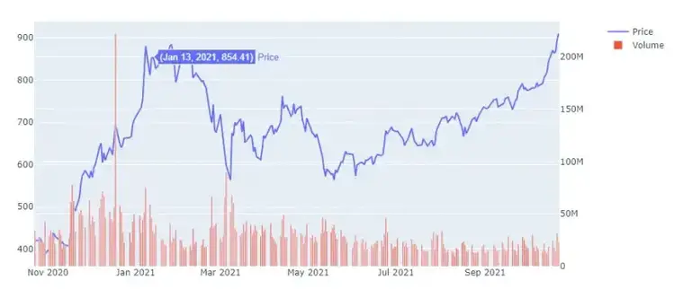
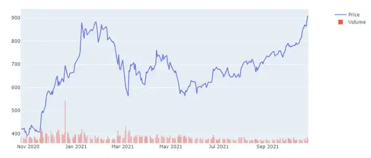

How To Draw Stock Chart With Python
出處: https://pythoninoffice.com/draw-stock-chart-with-python/
In this tutorial, we’ll learn how to draw a stock chart with Python. Static charts are so 1990s, we don’t do it here. Instead, we’ll draw fully interactive charts using plotly.
UPDATED April 8, 2022 – Include a correction to hide non-trading days.
Tools Required
plotly – AWESOME charting library
yfinance – download historical market data from Yahoo Finance
pip install plotly
pip install yfinance
Download Historical Price Data From Yahoo Finance
We are going to use the yfinance library to download Tesla stock historical (1 year) price data. yfinance makes it really simple to download stock price data from Yahoo Finance.
import yfinance
tsla = yfinance.Ticker('TSLA')
hist = tsla.history(period='1y')
Tesla Stock Historical Price Data
Start With A Simple Stock Chart Using Python
In a previous tutorial, we talked about how to use Plotly Express. However, due to the complexity of our stock chart, we’ll need to use the regular plotly to unlock its true power.
It’s kinda funny that we can use the .Scatter() to draw a line chart. The following code draws a stock price chart using the daily Close price, also note the mode='lines'. It’s also important to remember to .show() the chart after plotting otherwise we can’t see them.
By the way, these charts are interactive, you can hover the mouse over the chart and see the price details.
import plotly.graph_objects as go
fig = go.Figure(data=go.Scatter(x=hist.index,y=hist['Close'], mode='lines'))
fig.show()
Tesla Stock Historical Price Data
If we set the mode='markers', then we’ll have a regular scatter (dots) plot. There’s also another mode='lines+markers' that shows both dots and lines like the below.
fig = go.Figure(data=go.Scatter(x=hist.index,y=hist['Close'], mode='lines+markers'))
fig.show()

Add Trading Volume To The Stock Chart
Let’s add the trading volume to the chart. To do this, we’ll need a subplot and secondary_y axis for the volume data.
In general, we can use the figure.add_trace() method to add a new data series into the graph. This is something the Plotly Express has difficulty with but is very easy to achieve in plotly_objects.
Note that for the primary y-axis i.e. the first figure.add_trace() below, we need to include secondary_y=False, or leave it blank (so that it will default to False). For the secondary y-axis, we need to specify that secondary_y=True in the add_trace method.
from plotly.subplots import make_subplots
fig2 = make_subplots(specs=[[{"secondary_y": True}]])
fig2.add_trace(go.Scatter(x=hist.index,y=hist['Close'],name='Price'),secondary_y=False)
fig2.add_trace(go.Bar(x=hist.index,y=hist['Volume'],name='Volume'),secondary_y=True)
fig2.show()

Although the volume data is on the secondary y-axis (see the label on the right-hand side), some of the bars are way too long and are covering the stock price graph. Let’s scale the volume bars down a little bit by setting a range for the y-axis. We can use the figure.update_yaxes() method to do that. Also, I’m going to hide the number labeling for the volume data. Again, note that we need to specify that we are operating on the secondary y-axis by setting secondary_y=True in the below code.
fig2.update_yaxes(range=[0,7000000000],secondary_y=True)
fig2.update_yaxes(visible=False, secondary_y=True)

Candlestick Chart
So really, who looks at a line chart for stocks? Pros look at only the candlestick chart!
No problem, we can do it in the candlestick style. Instead of using the Scatter() plot and passing the ‘Close’ price to the y-axis, now we need to specify each of ‘open’, ‘high’, ‘low’ and ‘close’, also known as the “ohlc”.
fig3 = make_subplots(specs=[[{"secondary_y": True}]])
fig3.add_trace(go.Candlestick(x=hist.index,
open=hist['Open'],
high=hist['High'],
low=hist['Low'],
close=hist['Close'],
))

It’s interesting because, with the Candlestick chart, we now have another smaller chart at the bottom, this is actually called a “range slider”, and we can drag either side to zoom in/out on a certain area of the chart.
Let’s also add back the volume information to the chart. I don’t think the range slider is particularly useful in this case, so I’m going to hide it by using the figure.update_layout() method.
fig3.add_trace(go.Bar(x=hist.index, y=hist['Volume'], name='Volume'),secondary_y=True)
fig3.update_layout(xaxis_rangeslider_visible=False)
Indicators
We’ll draw a simple indicator 20 Day Moving Average here to show the concept, theoretically, we can plot any indicator on the chart.
pandas provides convenient ways to calculate time series-related metrics such as the moving average. The df.rolling() method provides “moving windows” that we can operate on. To get the average of the moving window, we just need to add the .mean() at the end of the rolling() method.
fig3.add_trace(go.Scatter(x=hist.index,y=hist['Close'].rolling(window=20).mean(),marker_color='blue',name='20 Day MA'))
fig3.add_trace(go.Bar(x=hist.index, y=hist['Volume'], name='Volume'),secondary_y=True)
fig3.update_layout(title={'text':'TSLA', 'x':0.5})
fig3.update_yaxes(range=[0,1000000000],secondary_y=True)
fig3.update_yaxes(visible=False, secondary_y=True)
fig3.update_layout(xaxis_rangeslider_visible=False) #hide range slider
fig3.show()
We are also going to modify the volume a little bit. Right now the volume bars all have the same color. We can use different colors to distinguish between an up or down day – green for up days, and red for down days.
To do that, we just need to calculate the daily change (positive or negative) then insert a color column into our dataframe. Then we can pass the color information into the volume data series. The marker argument dictates how our scatter plot should look like – color, shape, size, etc.
hist['diff'] = hist['Close'] - hist['Open']
hist.loc[hist['diff']>=0, 'color'] = 'green'
hist.loc[hist['diff']<0, 'color'] = 'red'

To put everything together:
fig3 = make_subplots(specs=[[{"secondary_y": True}]])
fig3.add_trace(go.Candlestick(x=hist.index,
open=hist['Open'],
high=hist['High'],
low=hist['Low'],
close=hist['Close'],
name='Price'))
fig3.add_trace(go.Scatter(x=hist.index,y=hist['Close'].rolling(window=20).mean(),marker_color='blue',name='20 Day MA'))
fig3.add_trace(go.Bar(x=hist.index, y=hist['Volume'], name='Volume', marker={'color':hist['color']}),secondary_y=True)
fig3.update_yaxes(range=[0,700000000],secondary_y=True)
fig3.update_yaxes(visible=False, secondary_y=True)
fig3.update_layout(xaxis_rangeslider_visible=False) #hide range slider
fig3.update_layout(title={'text':'TSLA', 'x':0.5})
fig3.show()

You might notice that in the above graph, 20 D MA didn’t start from the beginning. That’s because we need 20 days to calculate the first moving average, therefore the first 19 days are essentially blank.
Hide Non-trading Days
Stock markets close on weekends and holidays, so there’s no data for those periods. The above chart looks all fine but you kind of see small gaps on the bars at the bottom. If we zoom in more, you’ll see them more clearly.
Zoomed in chart with gaps
Thanks Dan for suggesting this correction! Let’s now fix this.
Plotly charts have a rangebreaks attribute that we can use to hide certain time periods. This works on both x-axis and y-axis. Also note this attribute is not unique to the candlestick chart, so you can use it to block off time periods for any type of chart with datetime data.
All we need is to add another update_axes(rangebreaks=[…]) to the above code, just before the fig.show().
- bounds = [‘sat’, ‘mon’] will hide Saturdays and Sundays
- bounds = [16, 9.5] will hide between 4pm to 9:30am, which are market closed hours
- values = [“2021-12-25″,”2022-01-01”] can hide individual days
fig3.update_xaxes(rangebreaks = [
dict(bounds=['sat','mon']), # hide weekends
#dict(bounds=[16, 9.5], pattern='hour'), # for hourly chart, hide non-trading hours (24hr format)
dict(values=["2021-12-25","2022-01-01"]) #hide Xmas and New Year
])
The result is a much smoother graph without gaps.

Save Plotly Chart
We can save our stock chart in HTML form, which means all the interactive features will be retained in the graph.
fig3.write_html(r'C:\Users\jay\Desktop\PythonInOffice\plotly_stock_chart\graph.html')
Dash
Although our graph is interactive, it’s still lacking something. For example, if we want to draw a chart for another stock, we have to change the stock ticker inside the code and re-run it. In other words, our graph is not fully interactive yet. With Dash, we can create a graph that takes stock tickers as input and draw the chart accordingly.
import yfinance as yf
import pandas as pd
import plotly as plotly
import plotly.graph_objects as go
from plotly.subplots import make_subplots
def show_plot(fig, filename):
plotly.offline.plot(fig, filename=filename)
tsla = yf.Ticker('TSLA')
hist = tsla.history(period='1y')
fig = go.Figure(data=go.Scatter(x=hist.index,y=hist['Close'], mode='lines'))
# 只有線圖
show_plot(fig, 'test.html')
# 線圖+點
fig = go.Figure(data=go.Scatter(x=hist.index,y=hist['Close'], mode='lines+markers'))
show_plot(fig, 'test.html')
# 線圖+點+成交量柱狀圖
fig2 = make_subplots(specs=[[{"secondary_y": True}]])
fig2.add_trace(go.Scatter(x=hist.index,y=hist['Close'],name='Price'),secondary_y=False)
fig2.add_trace(go.Bar(x=hist.index,y=hist['Volume'],name='Volume'),secondary_y=True)
show_plot(fig2, 'test.html')
# 線圖+點+成交量柱狀圖+nornalize
fig2.update_yaxes(range=[0,7000000000],secondary_y=True)
fig2.update_yaxes(visible=False, secondary_y=True)
show_plot(fig2, 'test.html')
# 線圖+點+成交量柱狀圖+蠟燭圖
fig3 = make_subplots(specs=[[{"secondary_y": True}]])
fig3.add_trace(go.Candlestick(x=hist.index,
open=hist['Open'],
high=hist['High'],
low=hist['Low'],
close=hist['Close'],
))
show_plot(fig3, 'test.html')
# 成交量柱狀圖+蠟燭圖
fig3.add_trace(go.Bar(x=hist.index, y=hist['Volume'], name='Volume'),secondary_y=True)
fig3.update_layout(xaxis_rangeslider_visible=False)
show_plot(fig3, 'test.html')
fig3.add_trace(go.Scatter(x=hist.index,y=hist['Close'].rolling(window=20).mean(),marker_color='blue',name='20 Day MA'))
fig3.add_trace(go.Bar(x=hist.index, y=hist['Volume'], name='Volume'),secondary_y=True)
fig3.update_layout(title={'text':'TSLA', 'x':0.5})
fig3.update_yaxes(range=[0,1000000000],secondary_y=True)
fig3.update_yaxes(visible=False, secondary_y=True)
fig3.update_layout(xaxis_rangeslider_visible=False) #hide range slider
show_plot(fig3, 'test.html')
Easy and Interactive Candlestick Charts in Python
https://medium.com/@dannygrovesn7/using-streamlit-and-plotly-to-create-interactive-candlestick-charts-a2a764ad0d8e
import pandas as pd
import yfinance as yf
import plotly.io as pio
import plotly.graph_objects as go
import plotly as plotly
from plotly.subplots import make_subplots
pio.renderers.default = "browser"
def get_candlestick_plot(df: pd.DataFrame, ma1: int, ma2: int, ticker: str):
"""
Create the candlestick chart with two moving avgs + a plot of the volume
Parameters
----------
df : pd.DataFrame
The price dataframe
ma1 : int
The length of the first moving average (days)
ma2 : int
The length of the second moving average (days)
ticker : str
The ticker we are plotting (for the title).
"""
fig = make_subplots(
rows=2,
cols=1,
shared_xaxes=True,
vertical_spacing=0.1,
subplot_titles=(f"{ticker} Stock Price", "Volume Chart"),
row_width=[0.3, 0.7],
)
fig.add_trace(
go.Candlestick(
# x=df["Date"],
x=df.index,
open=df["Open"],
high=df["High"],
low=df["Low"],
close=df["Close"],
name="Candlestick chart",
),
row=1,
col=1,
)
fig.add_trace(
go.Line(x=df.index, y=df[f"{ma1}_ma"], name=f"{ma1} SMA"),
row=1,
col=1,
)
fig.add_trace(
go.Line(x=df.index, y=df[f"{ma2}_ma"], name=f"{ma2} SMA"),
row=1,
col=1,
)
fig.add_trace(
go.Bar(x=df.index, y=df["Volume"], name="Volume"),
row=2,
col=1,
)
fig["layout"]["xaxis2"]["title"] = "Date"
fig["layout"]["yaxis"]["title"] = "Price"
fig["layout"]["yaxis2"]["title"] = "Volume"
fig.update_xaxes(
rangebreaks=[{"bounds": ["sat", "mon"]}],
rangeslider_visible=False,
)
return fig
def show_plot(fig, filename):
plotly.offline.plot(fig, filename=filename)
if __name__ == "__main__":
stock = "2630.TW"
tsla = yf.Ticker(stock)
df = tsla.history(period="10y")
df["10_ma"] = df["Close"].rolling(10).mean()
df["20_ma"] = df["Close"].rolling(20).mean()
fig = get_candlestick_plot(df[-120:], 10, 20, stock)
# fig.show()
show_plot(fig, "tsla.html")
子圖
from plotly.subplots import make_subplots
import plotly
import plotly.graph_objects as go
fig = make_subplots(
rows=2, cols=2,
specs=[[{"type": "xy", 'secondary_y': True}, {"type": "polar"}],
[{"type": "domain"}, {"type": "scene"}]],
y_title='title'
)
'''
也可以為：specs=[[{'type': 'bar'}, {'type': 'barpolar'}],
[{'type': 'pie'}, {'type': 'scatter3d'}]]
'''
# 使用 secondary_y 參數選擇該圖相對的 y軸座標
fig.add_trace(go.Bar(y=[2, 3, 1]),
row=1, col=1, secondary_y=False)
fig.add_trace(go.Scatter(x=[0, 1, 2], y=[4, 10, 7]),
row=1, col=1, secondary_y=True)
fig.add_trace(go.Barpolar(theta=[0, 45, 90], r=[2, 3, 1]),
row=1, col=2)
fig.add_trace(go.Pie(values=[2, 3, 1]),
row=2, col=1)
fig.add_trace(go.Scatter3d(x=[2, 3, 1], y=[0, 0, 0],
z=[0.5, 1, 2], mode="lines"),
row=2, col=2)
fig.update_layout(height=700, showlegend=False)
plotly.offline.plot(fig, filename='test.html')